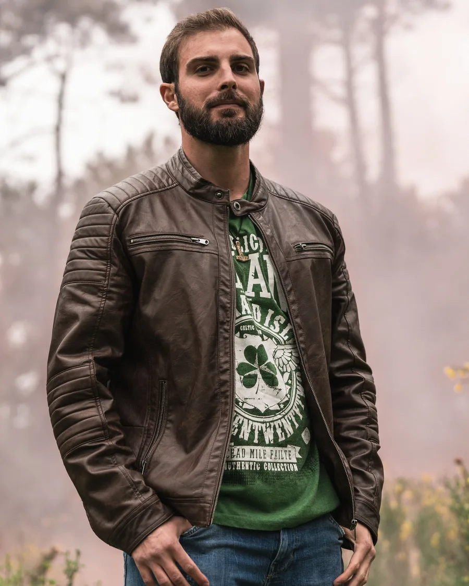
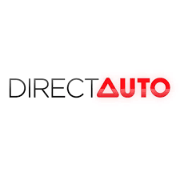
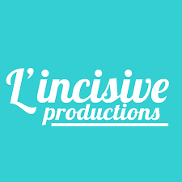
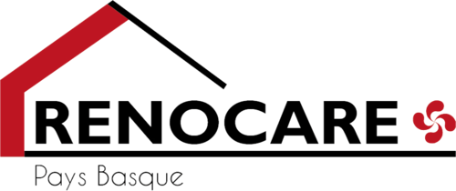
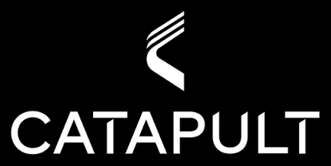

Available for new projects
Videos people watch to the very end.
Videographer, editor and drone pilot based in Bayonne, France. I travel across Europe for shoots, the UK and Ireland included, and edit remotely for clients everywhere.
- Videographer
- Video editor
- Drone
- Photographer
- Bayonne · Europe
Services
Twelve kinds of video, one standard
Pick a service to watch films already delivered.

About
Behind the camera, and behind the edit
I'm Lucas Lavielle. I started filming at 15 and made it my job in 2021, when I founded Lavielle Créations in Bayonne, on the French Basque coast.
I take a project from the shoot to delivery: camera, drone footage, editing, colour grading and sound design. You deal with one person, from the first call to the final film.
I also work as a remote editor only. That is how I work with Brussels agency Cubix Advertising, editing advertising reels. I edit in DaVinci Resolve: if your team works in Premiere Pro, I start from your timeline and send one back at the end. I work in English and French.
- DaVinci Resolve
- Premiere Pro timelines welcome
- Trained drone pilot
- English · French
I am also a photographer: weddings, families, sport, businesses, landscapes and drone. Click a photo to enlarge it.


- NRJ Global Régions







« The videos Lavielle Créations produced for Renocare have become a pillar of our communication. We use them everywhere, from client presentations to television and cinema advertising. An incredible impact! »
« Lucas joined me on a documentary shoot. He is very proactive, handles both drone and camera, and works efficiently on very tight deadlines. A great experience overall, I recommend him! »
« Lucas was the photographer and videographer at my wedding. He stayed with us for 9 hours, from the town hall to the dance floor. The camera work is beautiful and we have lovely photos we truly fell for. We love his creative sensitivity. We have since called on him for other projects, always with the same satisfaction! »
« We hired Lucas to make a video for a community project. Everything went very well: he is an experienced, professional and accommodating videographer. We highly recommend his work! »
« Lucas is a great listener, sensitive and discreet. He brought out the strengths of our retreat and blended perfectly into our days. He is responsive, comes with ideas and is creative: a real pleasure to work with! »
« Lucas made the presentation film for my venue. The result is breathtaking, a magnificent video. He also made himself available for the changes requested by our communication agency, always with good humour and professionalism. »
« Well done to Lucas for his availability, his good humour and the quality of his work. Clean delivery at a fair price. »
« I worked with Lucas on promotional videos for my massage studio. He met my expectations and more: very attentive and available. Thank you Lucas! »
Reviews translated from French.
Process & rate
Simple, from the first call to delivery
- 1
Brief
Tell me about your project by message or video call. I send you a detailed quote, free and with no obligation.
- 2
Shoot
I travel with camera, lighting, sound and drone, in France and abroad. Already have your footage? We go straight to the edit.
- 3
Edit & delivery
Editing, colour grading and sound design. You review the film online, then I deliver it in the formats you need.
Day rate
€500/ day
Shooting or editing. Every project gets a precise quote based on duration, location and the level of finish you want. Travel costs are stated clearly in it.
Get a quoteFAQ
What I get asked most often
Do you work with clients in the UK and Ireland?
Yes. I edit remotely for clients anywhere in Europe, and I travel for shoots in the UK, Ireland, Belgium, Switzerland and across France. Travel costs are itemised in the quote, with no surprises.
Can we work entirely remotely?
Yes. You send me your footage through a transfer link, I handle the editing, colour grading and sound design, and you review each version online. This is how I work with agencies and brands in France and Belgium.
My team works in Premiere Pro. Is that compatible?
Yes. I edit in DaVinci Resolve, but I can start from your Premiere Pro timeline and send a Premiere timeline back at the end. You keep control of the project in your own software.
How much does a video cost?
My base rate is €500 per day, for shooting or editing. The final price depends on the number of days, the location and the level of finish. You receive a free, detailed quote before committing to anything.
Do you offer drone footage?
Yes. I am a trained drone pilot (Drone Up Academy) and I fly in line with current regulations. Drone footage can be added to any service.
Which formats do you deliver?
The formats that suit where the film will be shown: horizontal for web and TV, vertical for Instagram, TikTok and YouTube Shorts, square if needed. We agree on formats when preparing the quote.
Do you work in English?
Yes. The whole project can run in English, from our first exchanges to the shoot and the subtitles.
Contact
Let's talk about your next project
Got a video project in mind? Free quote within 24 hours.